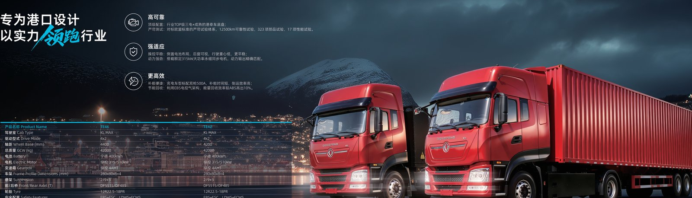

The economics of running an electric truck fleet on a remote mine site are different from anything a diesel operation has modeled before. On a generator-powered camp, your fuel is not delivered by tanker but generated on site, and every kilowatt-hour you put into a 600 kWh pack carries the full loaded cost of diesel, prime mover efficiency, and the capital sitting idle behind the fence. This guide breaks the numbers down for fleet buyers who are weighing a TZ5E electric dump truck against the conventional haulage they run today, with a focus on the South Africa electric truck market where generator-backed pits are the norm rather than the exception.
A city depot buys grid power at a published tariff. A mine site often runs its own power plant because the grid either does not reach the pit or cannot hold the load. That single fact changes the entire cost baseline. When you charge an EV truck from a diesel generator, you are paying for the diesel, the generator's fuel-to-electric efficiency, and the maintenance reserve on a machine that burns money whether or not a truck is plugged in. The question is not whether electricity is cheaper than diesel in the abstract. It is what a delivered kilowatt-hour actually costs when you make it yourself at the edge of the network. For a 600 kWh mining pack, a small error in that number compounds across hundreds of charge cycles per year.
Most operations underestimate the generator. A diesel genset running at part load can sit near 25 to 30 percent efficiency, while a unit sized correctly and run near its sweet spot can reach 38 to 42 percent. If you charge a truck using a genset that is also powering the camp, the marginal cost of the charge is the marginal diesel, which is often the cheapest power on site. If you spin up a dedicated generator just to charge, you inherit the full fixed cost and the idle penalty. The dispatch logic matters as much as the truck.
To compare fairly, convert everything to cost per ton-kilometer of haulage or cost per delivered kilowatt-hour. Start with diesel at the bowser. In many Southern African pits, delivered diesel lands at a price well above the refinery gate because of haul distance, security, and storage loss. A diesel haul truck burns that fuel at roughly 0.25 to 0.40 liters per ton-kilometer depending on grade and payload. An electric truck, by contrast, converts battery energy to wheels at 80 to 90 percent drivetrain efficiency and recovers a further slice through regenerative braking on downhill haul roads.
The table below models a representative pit with a 600 kWh pack, a 10 km round-trip haul, and a daily duty cycle of roughly six round trips. The numbers are deliberately conservative and meant to show the structure of the comparison rather than a promise for any specific site.
| Cost element | Diesel haul truck | Electric truck (genset) | Electric truck (solar hybrid) |
|---|---|---|---|
| Energy per 1,000 t-km | 300 L diesel | 420 kWh | 420 kWh |
| Delivered energy cost | $0.95/L | $0.32/kWh | $0.18/kWh |
| Energy cost per 1,000 t-km | $285 | $134 | $76 |
| Daily energy spend (60 loads) | $1,710 | $804 | $456 |
| Maintenance burden | High (engine, filters) | Low (no engine) | Low (no engine) |
The headline is not that electricity wins by default. It is that the delivered cost of a kilowatt-hour is the single biggest lever, and on a generator site you control that lever directly through dispatch and through hybrid generation.
Mine sites in high-irradiance regions sit on a gift: a large, flat, secure area and a daytime load curve that lines up well with solar generation. A solar hybrid system pairs a photovoltaic array with battery buffering and a downsized generator. During daylight, the array carries the camp and feeds the truck chargers; the generator tops up only when cloud or peak demand exceeds solar output. Because the truck chargers are a flexible load, they can absorb midday solar that would otherwise be curtailed.
For a fleet of three to five TZ5E electric dump truck units on a 600 kWh pack each, a 1 to 2 MWp solar block with a 1 MWh buffer typically cuts diesel draw by 40 to 60 percent during sunny months. The payback on the solar addition is usually faster than solar alone, because it displaces the most expensive marginal diesel rather than grid power priced at a low tariff.
Two charging strategies suit mine sites. Opportunity charging parks the truck at a pantograph or connector during shift changes and loader downtimes, adding 10 to 30 percent between cycles. Battery swap replaces a depleted 600 kWh pack with a charged one in roughly five to six minutes, which is the same order of magnitude as a diesel fill. For continuous haulage where every minute of downtime is lost production, swap is attractive despite the higher infrastructure cost. For mines with natural idle windows, opportunity charging is cheaper and simpler.
The payback case rests on three variables: the delivered diesel price, the delivered charging cost, and the annual tonnage. As a rule of thumb, when delivered diesel exceeds about $0.80 per liter and the site runs more than 5,000 charge-equivalent cycles over the asset life, the electric truck reaches cost parity inside the warranty window. The 8-year or 4,500-cycle battery warranty from the CATL LFP pack removes the largest unknown: battery replacement cost. Fleet buyers should model the battery as a known, bounded line item rather than an open risk.
Do not forget the second-order savings. An electric truck removes engine oil, fuel filters, exhaust aftertreatment, and most of the drivetrain wear that defines diesel maintenance. In remote camps where a single service visit can mean a charter flight, that reduction in parts dependency is often worth more than the energy saving on paper. The South Africa electric truck market has shown exactly this pattern, where logistics cost and skills scarcity make simplicity a financial argument, not just an environmental one.
Fleet buyers should budget the truck and the energy system together. The TZ5E electric dump truck sits in the upper band of the Dongfeng EV range by configuration, and the FOB price for a complete electric mining haulage setup typically lands in the $120k to $180k range depending on pack size and body spec. Pair that with a scoped solar-hybrid or generator-backed charging plant and the total site electrification package becomes a single, financeable project rather than two disconnected purchases.
The practical recommendation for a first deployment is a pilot of two trucks against a matched diesel pair on the same haul, metered for ninety days. Capture delivered diesel cost, delivered charging cost, availability, and tonnage. The data from that pilot will be worth more than any generic model, because the single variable that decides the business case, your real cost per kilowatt-hour, is a site-specific number that no vendor can quote for you.
Across the South Africa electric truck market and similar generator-backed regions, the fleets that win are not those that chase the lowest sticker price. They are the ones that treat energy as a manufactured product they control. Charge from the sun when it shines, from marginal diesel when it does not, and keep the trucks simple. That is the whole strategy, and the TZ5E makes it operationally boring, which is exactly what a mine site should want.
Ready to electrify your fleet? Contact Shaanxi Fenghan Trading — authorized Dongfeng EV truck exporter. WhatsApp: +86 153 1943 1311 | Email: sales@fenghan-trade.com | dongfengevtrucks.com
🌐 Our Network: Fenghan Trade (SAGMOTO/SHACMAN Truck Export) · heavy duty trucks export China